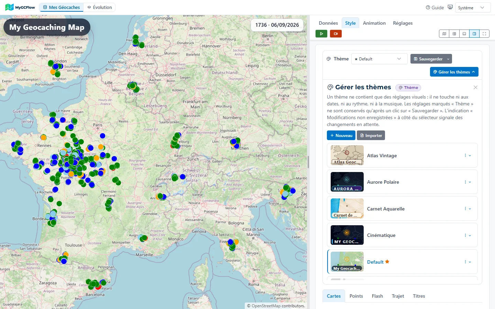
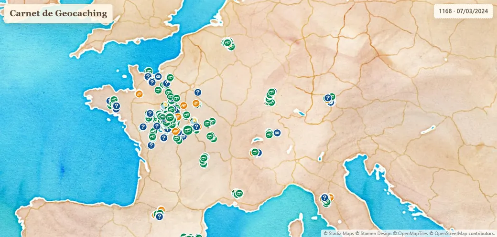
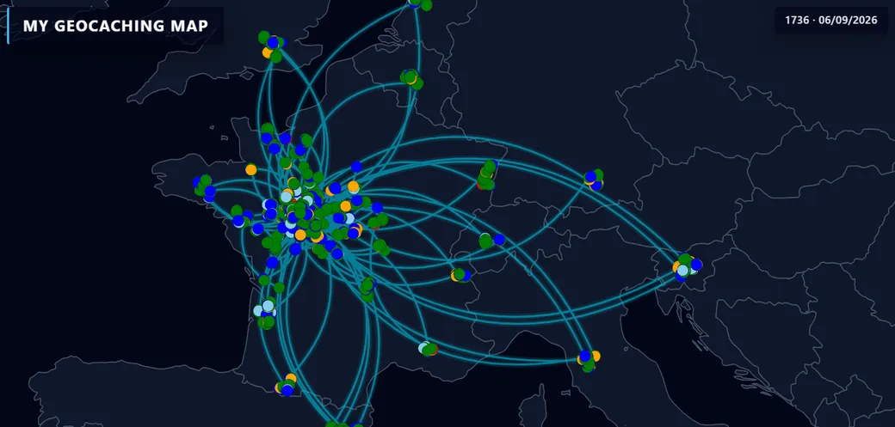
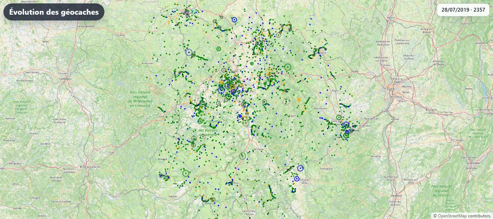
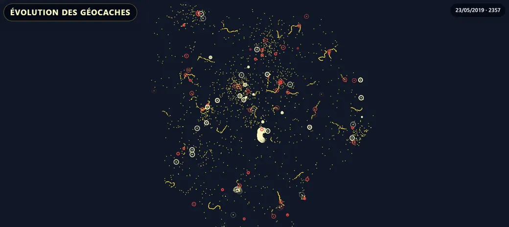

Basemaps
OpenStreetMap, light or dark Toner, watercolor, or a vector map where you choose the colors and the line thickness.
Alpha version · Windows
MyGCFlow reads your “My Finds” Pocket Query and brings your caches back day after day, in the theme of your choice. You can then export the animation as a video.
Free. A small personal project, still in early days.
Export the “My Finds” Pocket Query from geocaching.com, then load the
.gpx or .zip file, or drop it onto the page. Filter by type,
size, difficulty, terrain, date range or country.
Start from a bundled theme, then tune the basemap, the points, the appearance flash, the title and the counter. Save the result under your own name.
Choose the period and the pace, add some music if you like, check the result on screen, then export the video.
Your data stays on your computer. The application runs locally and opens in your browser; only the basemap tiles come from the Internet.
The map on one side, the settings on the other: every change shows right away.

A theme gathers all the visual settings. These ship with the application; each one can be edited, duplicated, exported or imported as JSON.

Screenshots of the application mid-animation, with the same fictional caches file.
Everything is set in the interface, with nothing to write.
OpenStreetMap, light or dark Toner, watercolor, or a vector map where you choose the colors and the line thickness.
Vector shapes or icons (Geocaching, Smiley), size, border, and fixed colors or colors taken from the cache type.
The effect played when a cache appears: circle, pulse with a wave, star, sparkle, square, diamond… with its size, duration and color.
A title and a panel with the cache count and the current date. Text, box, shadow and position are set by tabs, or in CSS if you prefer.
Set the speed in days per second or the final video duration. With music, the animation can match the track's length.
Fast capture in the browser, or frame-by-frame rendering assembled by ffmpeg, slower but steadier. Output resolution up to 4K.
The view drifts toward the day's caches, and zooms out for the duration of a big jump. Four levels of dynamism.
Keep only part of your caches: a type, a size, a difficulty, a terrain, a period, a country or a region.
Optionally, a line links the caches from one day to the next and reaches the new ones as they appear. Long jumps are drawn as arcs, like a flight. Color, thickness, pattern, glow and the fading trail are set in the theme.
The trail is indicative: it is reconstructed from dates, without knowing the real order of visits, and follows neither roads nor terrain.

Instead of your own caches, animate all of them in a region.


An animation recorded with MyGCFlow.
MyGCFlow works, but it is young: the current version is 0.0.3. Expect bugs, settings that change from one version to the next, and an interface still being polished.
The next work areas, with no promised dates.
Better handling of Challenge cache dates, so they appear at the right time in the animation.
Display your own images during the animation.
Watch the difficulty/terrain matrix and other statistics fill up as the animation runs.
Take Lab Caches into account, so they appear on the map too.
Expand the palette of effects available for the animation.
Let everyone offer their best themes to other users. The form this will take remains to be found.
Latest release: 0.0.3, for Windows.
Nothing else to install: Python and ffmpeg are included.
On first launch, click “More info”, then
“Run anyway”.
The application lives in the notification area: that's where you reopen
it or quit it.
Release notes and older versions